658 — Phổ mắt–tai–cột sống (OAVS/Goldenhar) & dị tật cung mang I–II / Oculo-auriculo-vertebral spectrum & branchial arch anomalies
Tags: pattern:di-dang-bam-sinh pattern:khoi-co-bam-sinh vung:dau-mat-co vung:cot-song-co score:OMENS score:Jahrsdoerfer protocol:CT-thai-duong
Mức chắc chắn (certainty): tổng hợp y văn (literature synthesis) — tổng hợp từ bài tổng quan phôi thai–hội chứng + các ca lâm sàng ảnh CC, chưa phải ca nguyên văn đơn lẻ.
1. Tổng quan bệnh học – cơ chế hình ảnh
1.1 Vì sao cung mang I–II quyết định "mặt – tai – cổ"
- Cung hầu (pharyngeal arch / branchial arch) hình thành tuần 4–8 thai kỳ. Mỗi cung có: trục sụn, cung động mạch, thần kinh, cơ và mào thần kinh (neural crest) di cư vào. Cung I (hàm) cho: xương hàm trên/hàm dưới, xương gò má (zygomatic), xương búa–đe, dây V, cơ nhai — sụn trục là sụn Meckel (Meckel's cartilage). Cung II (móng) cho: xương bàn đạp, mỏm trâm, xương móng, dây VII, cơ mặt — sụn trục là sụn Reichert (Reichert's cartilage). Túi (pouch) và khe (cleft) cung I–II tạo ống tai ngoài (external auditory canal — EAC) và tai giữa.
- TẠI SAO (cơ chế): Phổ OAVS (oculo-auriculo-vertebral spectrum) / vi mất sản sọ mặt (craniofacial microsomia — CFM) sinh ra khi thiếu hụt di cư/tăng sinh mào thần kinh và mô cung I–II trong cửa sổ trên → giảm sản nửa mặt (hemifacial microsomia), microtia/ứ mạc tai ngoài, dermoid ở mắt và bất thường đốt sống. Ngược lại, hỏng đóng khe/túi để lại di tích khe mang (branchial cleft remnant) → nang/xoang/rò vùng cổ bên. Đây là bệnh hình thái (giải phẫu), nên CT xương và MRI/CT thái dương là xương sống chẩn đoán — không dựa vào tín hiệu mô như u.
- Dermoid ngoài nhãn cầu (epibulbar dermoid) = choristoma (mô bình thường lạc chỗ) nằm ở rìa giác mạc (limbus), thường kèm lông; khối đặc nông, không vôi hóa, không ngấm mạnh — khác u.
- TẠI SAO phân độ dermoid limbus theo độ sâu: độ sâu quyết định mổ cắt đơn thuần hay ghép giác mạc lát (lamellar keratoplasty).
1.2 Ngưỡng định lượng & mốc đọc chuẩn
- Tần suất CFM: phổ biến thứ hai trong dị tật mặt bẩm sinh (sau sứt môi–vòm miệng), 1/3.500–5.600 trẻ sinh sống (PMC13200892).
- Bất thường theo hệ (OAVS/Goldenhar): dị tật tai ~80%; coloboma mi trên > 75% số ca có tổn thương mắt; dermoid/choristoma ngoài nhãn cầu là dấu hiệu đặc trưng; bất thường đốt sống ~50% (PMC13411227).
- Dermoid limbus (phân độ Mann): độ I — nông, **< 5 mm**, ở limbus; **độ II** — lan sâu vào mô đệm giác mạc (stroma), có thể tới **màng Descemet** (tổn thương > 5 mm); độ III (hiếm) — lan tới Descemet/nội mô. Tần suất chung 1–3/10.000 người (PMC11503224).
- Ngưng thở khi ngủ do tắc nghẽn (OSA) ở Goldenhar: 7–67%; AHI (apnea–hypopnea index) phân độ nhẹ 5–15, vừa 15–30, nặng > 30 sự kiện/giờ (PMC13411227).
- Điểm Jahrsdoerfer (1–10) đánh giá xương thái dương trước tạo hình tai: thấp = bất lợi; nhóm nghiên cứu chia < 5 nặng / 5–8 vừa / > 8 nhẹ (PMC13607474). Kinh điển lấy ≥ 6–7/10 để cân nhắc mổ (số kinh điển, "cần tra thêm" nếu muốn trích dẫn chính xác).
- Nang khe mang II là hay gặp nhất: ~67–95% dị tật cung mang (PMC13341225 nói 67–93%; PMC11986246 nói 85–95%), kích thước thường 1–10 cm (PMC13341225).
2. Mẫu hình + chẩn đoán phân biệt theo vị trí (gamut)
Chia thành hai mẫu hình dựa trên câu hỏi đầu tiên:
(A) "Mặt–tai lệch một bên + mắt có khối ở rìa giác mạc" → ưu thế nhóm OAVS/CFM (cung I–II). Theo OMENS / OMENS+ (Orbital, Mandibular, Ear, Nerve, Soft tissue, ± ngoài sọ): lệch ổ mắt (coloboma mi, dermoid), hàm dưới (giảm sản), tai (microtia), dây VII (liệt mặt), mô mềm. Gamut: CFM/OAVS, Goldenhar (khi có dermoid ± đốt sống), Treacher-Collins, Nager, hội chứng branchio-oto-renal (BOR), Moebius, Pierre Robin/22q11.2. → Luôn quét kèm cột sống cổ–ngực (gù/vẹo, đốt sống khối, nửa đốt sống), tim, thận, TKTW.
(B) "Khối/nang vùng cổ bên ở trẻ" → gamut theo vị trí (location) trước, mô học sau.
- Cạnh tuyến mang tai / loa tai, trên xương móng (cung I) → dị tật khe mang I (Work type I/II).
- Bờ trước cơ ức–đòn–chũm (SCM), trên xương móng, sau tuyến dưới hàm (cung II) → nang rò khe mang II (Bailey type I–IV).
- Tuyến giáp/cổ dưới, trước khí quản → nang ống giáp–lưỡi (thyroglossal duct cyst — đường giữa, di động khi nuốt).
- Hố hầu (retropharyngeal)/ngực trên → túi mang III/IV (dò vào xoang lỗ rò pyriform).
- Nang lành khác: nang biểu bì/bì (dermoid/epidermoid), nang nước bọt dưới lưỡi (ranula), bạch mạch (lymphatic malformation — "cystic hygroma" nhiều vách), u tuyến nước bọt.
3. Bảng so sánh phân biệt (ma trận đối chiếu)
Bảng 3A — phổ mặt–tai–mắt–đốt sống (nhóm cung I–II):
| Thực thể (entity) | Hình ảnh điển hình | Chốt vào (rule-in) | Chốt loại (rule-out) | Gợi ý xác nhận |
|---|---|---|---|---|
| OAVS/CFM (vi mất sản sọ mặt) | Lệch một bên; giảm sản hàm dưới/gò má trên CT xương; CT/MRI thái dương bất đối xứng | Lệch nửa mặt + microtia một bên (đa số) | Lệch hai bên đối xứng kiểu sứt môi–miệng → TCS | CT 3D sọ (đối chiếu hai bên) + MRI/CT thái dương |
| Goldenhar (trong phổ CFM) | CFM + dermoid ngoài nhãn cầu ± bất thường đốt sống | Dermoid ở limbus (mắt) + bất đối xứng mặt = Goldenhar | Không có dermoid và không bất thường đốt sống → gọi CFM, tránh lạm dụng tên "Goldenhar" | Soi đáy/đo khúc xạ; X-quang/CT cột sống |
| Treacher-Collins (TCS) | Giảm sản xương gò má–hàm, coloboma MI DƯỚI, tai bất thường, HAI BÊN đối xứng | Coloboma mi dưới + sứt vòm miệng + hai bên | Dermoid ở limbus + lệch một bên → OAVS | Gen TCOF1/POLR1C/POLR1D; CT sọ |
| Nager syndrome | Giảm sản hàm + dị tật chi trục quay (radial) | Dị tật mặt kèm khiếm khuyết chi trước trục | Chi bình thường → TCS | Gen SF3B4; X-quang chi |
| BOR (branchio-oto-renal) | Nang/khe mang cổ + tai + thận; hố trước tai | Dị tật mang + bất thường tai + thận (tam chứng) | Không tổn thương thận → nhóm CFM | Siêu âm thận; gen EYA1 (~40–75%) |
| Moebius | Liệt dây VII (± VI) hai bên, mặt "mặt nạ" | Liệt mặt hai bên bẩm sinh | Lệch mặt đơn thuần → CFM | Khám thần kinh/dây VII |
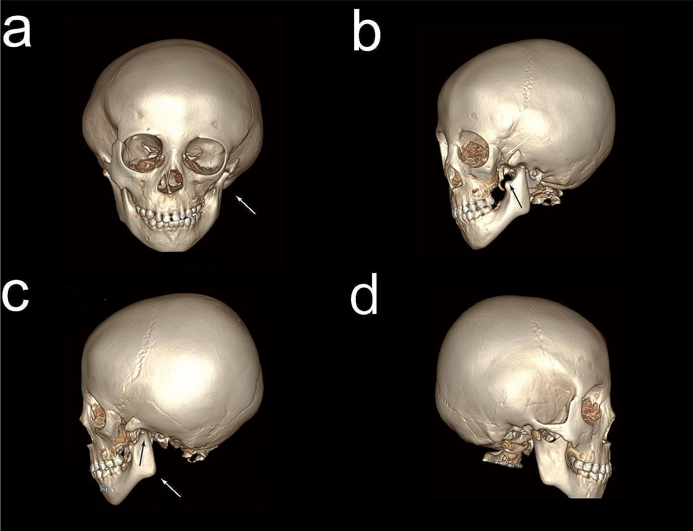
CT sọ dựng 3D của trẻ OAVS: (a) bất đối xứng hai bên xương hàm dưới và xương gò má (mũi tên); (b) bên trái mất mỏm thái dương (temporal process) của xương gò má; (c, d) các góc nhìn khác cho thấy lệch khớp thái dương–hàm. Đây là bằng chứng xương của CFM. Nguồn: Fu Y et al. (PMC10882892), BMC Ophthalmol 2024, CC BY 4.0 — Fig 5.Bảng 3B — nang/dò vùng cổ bên ở trẻ (theo vị trí):
| Thực thể (entity) | Hình ảnh điển hình | Chốt vào (rule-in) | Chốt loại (rule-out) | Gợi ý xác nhận |
|---|---|---|---|---|
| Khe mang II (hay gặp nhất) | Nang đơn ngăn/bọc bờ trước SCM, trên xương móng, sau tuyến dưới hàm, cạnh khoang cảnh (Bailey I–IV) | Vị trí góc hàm–bờ trước SCM + trên xương móng | Nằm đường giữa, di động khi nuốt → nang ống giáp–lưỡi | US → CT/MRI (không chọc khi đang viêm) |
| Khe mang I | Nang quanh tuyến mang tai/loa tai (preauricular); Work type I–II (loại II có thể chạy sát/xuyên dây VII) | Cạnh tuyến mang tai/loa tai | Ở cổ dưới → khe mang II/III–IV | MRI (quan hệ dây VII); tránh rạch khi chưa rõ |
| Túi mang III/IV | Nang hố hầu/cổ dưới, dò vào xoang lỗ rò hình quả lê (pyriform sinus); ~90% bên trái | Dò pyriform + viêm cổ dưới tái phát bên trái | Không thấy đường dò pyriform → xem lại khe mang II | Nội soi ± chụp dò/CT; type IV ~6% bên phải |
| Nang ống giáp–lưỡi | Nang đường giữa trên/dưới xương móng, dính vào xương móng | Đường giữa + di động theo nuốt (dấu "thè lưỡi") | Lệch bên → khe mang II | US / CT; phẫu thuật kiểu Sistrunk |
| Bạch mạch (lymphatic malformation) | Khối nhiều vách, tăng echo, không tưới máu, hay dưới hàm/cổ sau | Nhiều ngăn vách + không ngấm thuốc | Nang đơn ngăn có bờ rõ sau SCM → khe mang II | MRI T2 sáng; đánh giá chèn ép đường thở |
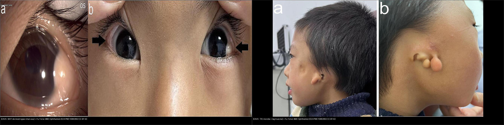
Trái: OAVS — MẮT (dermoid ngoài nhãn cầu ở góc trong mắt + hai bên, mũi tên). Phải: OAVS — TAI (microtia + nhiều tag trước tai một bên, kèm lệch mặt). Cùng ca ở BMC Ophthalmol 2024. Nguồn: Fu Y et al. (PMC10882892), CC BY 4.0. Ảnh ghép letterbox.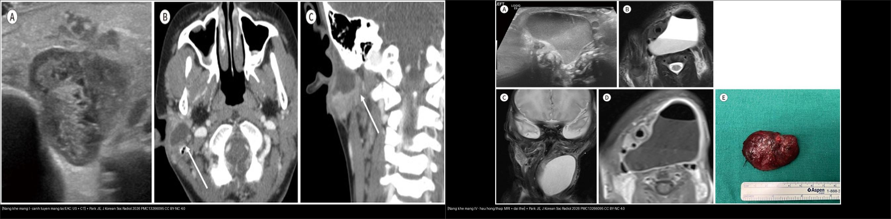
Trái: nang khe mang I — khối nang cạnh tuyến mang tai (US đa âm hỗn hợp + CT xoang bờ ngấm). Phải: nang khe mang IV — khối nang lớn vùng cổ thấp/hố hầu trên MRI (kèm đại thể). Vị trí so với tuyến mang tai và hố hầu là chốt. Nguồn: Park JE, J Korean Soc Radiol 2026 (PMC13266095), CC BY-NC 4.0. Ảnh ghép letterbox.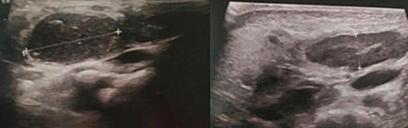
Siêu âm vùng cổ bên phải: khối nang đơn ngăn bờ rõ ở bờ trước cơ ức–đòn–chũm — hình ảnh kinh điển của nang khe mang II (hay gặp nhất, ~67–95% dị tật cung mang). Nguồn: Houas J et al. (PMC11986246), Int J Surg Case Rep 2025, CC BY-NC-ND 4.0 (giữ nguyên bản) — Fig 2.4. Protocol chụp + hệ phân độ / lưu đồ
- OAVS/CFM — quy trình hình ảnh: CT sọ–mặt dựng 3D (đối xứng xương hàm dưới/gò má/khớp thái dương–hàm; mất mỏm thái dương xương gò má); CT xương thái dương lát mỏng ≤ 1 mm (ứ mạc EAC, tai giữa, điểm Jahrsdoerfer); MRI sọ/tai (IAC, ốc tai, dây VII–VIII nếu nghi bất sản); X-quang/CT cột sống cổ–ngực (đốt sống khối, nửa đốt sống, gù/vẹo); siêu âm thận + tim (bất thường phối hợp); soi đáy mắt + khúc xạ (dermoid, loạn thị gây nhược thị).
- Khối cổ bên ở trẻ: siêu âm đầu tay; CT cản quang (vị trí so với SCM, khoang mạch) và MRI (đường dò, quan hệ dây VII, tổn thương hố hầu). Không chọc khi đang viêm cấp.
- Hệ phân độ dùng trong bài: OMENS/OMENS+ (mặt); Mann (dermoid limbus I–III); Nagata hình thái / Marx độ I–IV (microtia); Jahrsdoerfer 1–10 (xương thái dương); Work type I–II (khe mang I); Bailey type I–IV (khe mang II, tinh chỉnh Proctor 1955).
flowchart TD
A[Khối/nang cổ bên ở trẻ] --> B{Vị trí so với cơ ức-đòn-chũm?}
B -->|Đường giữa, trên xương móng| C[Nang ống giáp-lưỡi]
B -->|Bờ trước SCM, trên xương móng| D{Khe mang II<br/>Bailey I-IV}
B -->|Quanh tuyến mang tai/loa tai| E{Khe mang I<br/>Work I-II}
B -->|Cổ dưới/hố hầu, dò pyriform| F{Túi mang III/IV<br/>~90% bên trái}
D --> G[US -> CT/MRI; mổ cắt toàn bộ nang+dò]
E --> H[MRI quan hệ dây VII; mổ tránh tổn thương dây VII]
F --> I[Nội soi + chụp dò; cắt xoang pyriform]
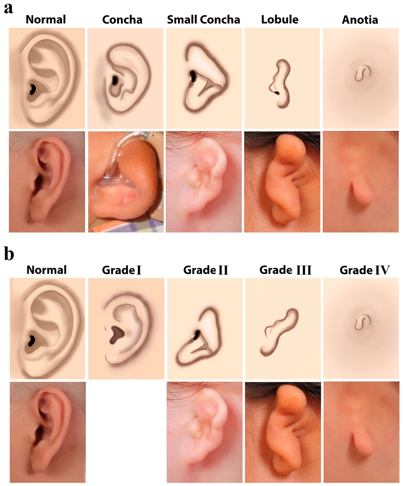
Hai hệ phân loại loa tai ngoài: (a) Nagata hình thái — bình thường / ốc tai (concha) / ốc tai nhỏ / thùy (lobule) / không tai (anotia); (b) Marx độ I–IV theo mức nặng. Lưu ý: hình thái loa tai ngoài KHÔNG phản ánh trung thực giải phẫu xương thái dương bên dưới (điểm Jahrsdoerfer chồng lấn nhiều giữa các độ) → luôn chụp CT thái dương lát mỏng. Nguồn: Solmaz E et al. (PMC13607474), J Clin Med 2026, CC BY 4.0 — Fig 2.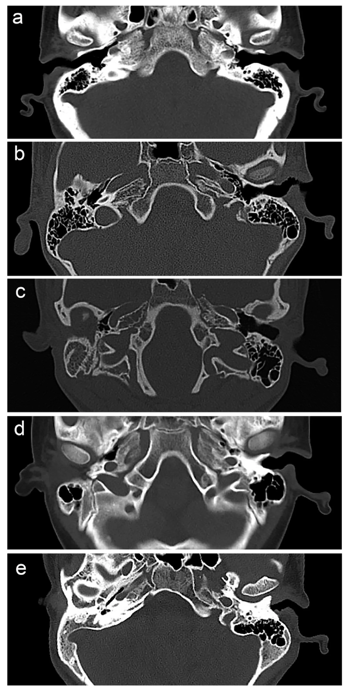
CT trục xương thái dương: (a) người lành — ống tai ngoài thông; (b–e) các ca microtia một bên kèm ứ mạc ống tai ngoài (EAC atresia) mức độ khác nhau — cơ sở để tính điểm Jahrsdoerfer 1–10 (nhóm nghiên cứu xếp < 5 nặng / 5–8 vừa / > 8 nhẹ). Nguồn: Solmaz E et al. (PMC13607474), J Clin Med 2026, CC BY 4.0 — Fig 3.5. Biến thể bình thường và cạm bẫy
- Tag/khối trước tai (preauricular tag/pit) là biến thể nhỏ, hay lành — nhưng khi kèm lệch mặt, microtia hoặc bất thường đốt sống thì phải nghĩ phổ OAVS và đi tìm tổn thương phối hợp.
- Đừng lạm dụng tên "Goldenhar": Goldenhar = CFM + dermoid ngoài nhãn cầu ± bất thường đốt sống; nếu chỉ có lệch mặt/microtia thì gọi CFM (chẩn đoán Goldenhar hay bị dùng sai — PMC13200892).
- Bất đối xứng hàm hai bên trên CT 3D dễ nhầm với tư thế đầu nghiêng/artifact chuyển động — luôn dựng ở tư thế chuẩn, đo đối chiếu hai bên.
- "Đảo lời khuyên theo vị trí, không theo hình nang": nang cổ bên có thể trông giống hệt nhau; vị trí so với SCM/xương móng/tuyến mang tai mới quyết định tên gọi và phẫu thuật.
- Cạm bẫy bất đối xứng cột sống: nửa đốt sống (hemivertebra) + đốt sống khối (block vertebra) là nguyên nhân gù/vẹo bẩm sinh (khác vẹo vô căn) — nhớ đếm đốt sống và tìm dị tật đốt sống ở mọi trẻ lệch mặt.
- Satisfaction of search: thấy dermoid mắt là dừng → bỏ sót tai (ứ mạc, điếc), thận, tim và đốt sống. Luôn "quét hệ": mắt–tai–cột sống–thận–tim–TKTW.
- Đường thở: hàm dưới giảm sản + bất thường đốt sống cổ làm đặt nội khí quản khó (khó soi thanh quản); OSA gặp tới 7–67% → đánh giá khi ngủ trước mọi can thiệp.
6. Tự lượng giá — Blind Quiz
Ca 1 — Trẻ có khối đặc ở rìa giác mạc, lệch nhẹ nửa mặt. Nhìn ảnh trước.
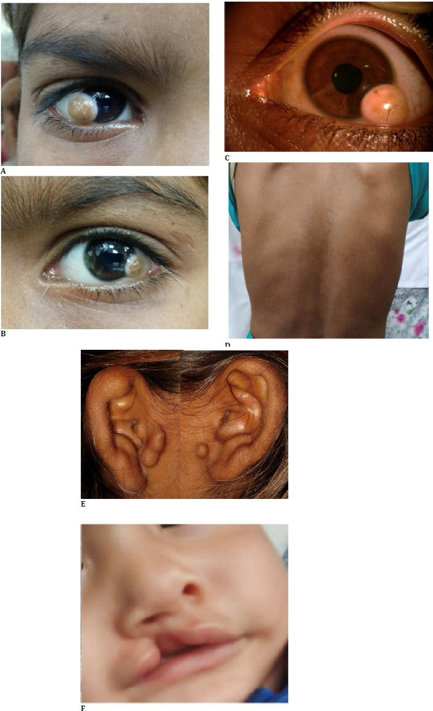
- Gợi ý lâm sàng: bệnh nhi được khám mắt; ảnh gồm mắt, cột sống và vùng miệng.
- Câu hỏi: Tổn thương ở mắt là gì, định vị ở đâu? Các ô khác cho thấy gì (khung xương, cột sống, môi)? Chẩn đoán hội chứng gợi ý?
Bấm để hiện đáp án (findings + chẩn đoán)
- Dấu hiệu (findings): (A, B, C) dermoid ở rìa giác mạc (limbal dermoid) — khối đặc nông màu hồng ngà ở limbus, một ô kèm lông mọc ra; (D) gù/vẹo cột sống nhẹ; (E) tag trước tai; (F) sứt môi.
- Chẩn đoán (diagnosis): phổ OAVS/Goldenhar — phối hợp dermoid ngoài nhãn cầu + tag trước tai + bất thường cột sống + sứt môi; vì tất cả nằm trong phổ dị tật cung hầu I–II. Vì dermoid độ I nông (< 5 mm) có thể cắt đơn thuần, còn độ II sâu hơn cần ghép giác mạc lát.
- Nguồn ảnh: Tripathi A et al. (PMC11503224), Rom J Ophthalmol 2024, CC BY 4.0 — Fig 1.
Ca 2 — Trẻ lệch nửa mặt + tai bất thường một bên. Nhìn ảnh trước.
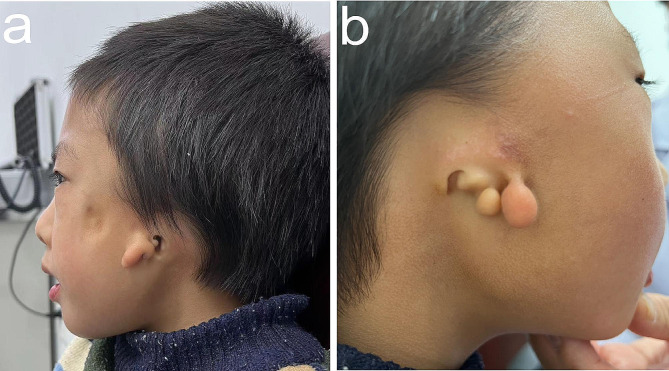
- Câu hỏi: Mô tả loa tai và các nốt quanh tai. Có lệch mặt không? Nên chụp thêm gì để đánh giá định mổ?
Bấm để hiện đáp án
- Dấu hiệu (findings): (a) lệch nửa mặt + loa tai nhỏ bất thường; (b) microtia một bên + nhiều tag/nốt trước tai; ống tai ngoài hẹp/mất một bên.
- Chẩn đoán (diagnosis): OAVS/CFM một bên — vì thiếu hụt mô cung hầu I–II. Bước tiếp: CT xương thái dương lát mỏng ≤ 1 mm để tính điểm Jahrsdoerfer (quyết định tạo hình tai/ứ mạc) và đánh giá chuỗi tai giữa–trong; đồng thời kiểm tra cột sống và thận.
- Nguồn ảnh: Fu Y et al. (PMC10882892), BMC Ophthalmol 2024, CC BY 4.0 — Fig 2.
Ca 3 — Trẻ điếc một bên, tai ngoài bất thường. Nhìn CT thái dương trước.
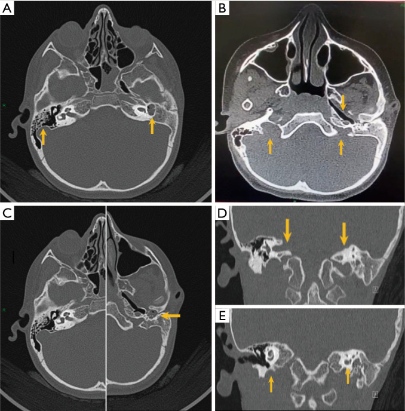
- Câu hỏi: Bên bệnh có gì? Liệt kê các tầng tai bị ảnh hưởng. Vì sao điểm Jahrsdoerfer lại thấp?
Bấm để hiện đáp án
- Dấu hiệu (findings): (A) bất sản ống tai trong (internal auditory canal — IAC) bên trái, ốc tai và tiền đình hợp nhất thành một khoang chung (common cavity), xương chũm kém khí hóa; (E) giảm sản ốc tai trái.
- Chẩn đoán (diagnosis): Goldenhar với bất thường cả ba tầng tai + bất sản IAC — vì cung I–II và túi tai cùng bị ảnh hưởng. Bất sản IAC/ khoang chung làm điểm Jahrsdoerfer thấp (< 5) → kém thuận lợi cho tạo hình tai giữa; cần cân nhắc dụng cụ dẫn âm xương, và chỉ cấy ốc tai điện tử khi ốc tai và dây VIII còn.
- Nguồn ảnh: Al Hamoud M et al. (PMC13264792), AME Case Rep 2026, CC BY-NC-ND 4.0 (giữ nguyên bản) — Fig 6.
Ca 4 — Trẻ có khối nang cạnh tuyến mang tai, tái phát. Nhìn ảnh trước.
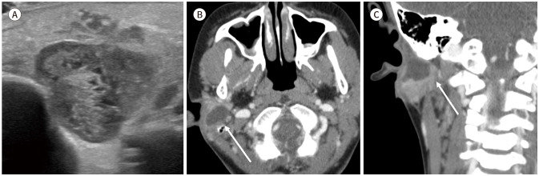
- Gợi ý lâm sàng: khối nang cạnh tuyến mang tai, tái phát sau khi sưng; không đau khi thăm khám ban đầu.
- Câu hỏi: Nang nằm ở khoang nào? Đây là nhánh cung mang nào, phân độ nào? Vì sao phải thận trọng với dây VII?
Bấm để hiện đáp án
- Dấu hiệu (findings): (A) siêu âm khối nang hỗn hợp kế cận tuyến mang tai phải; (B, C) CT cản quang trục + vành: khối nang viền ngấm, ranh giới rõ quanh tuyến mang tai/loa tai.
- Chẩn đoán (diagnosis): dị tật khe mang I — vị trí quanh tuyến mang tai/loa tai là chốt (khe mang II nằm bờ trước SCM, trên xương móng). Theo Work, loại II xuyên qua tuyến mang tai và có thể chạy sát/xuyên dây VII → mổ cần MRI để lần đường dây thần kinh, tránh rạch nhầm ổ nhiễm.
- Nguồn ảnh: Park JE, J Korean Soc Radiol 2026 (PMC13266095), CC BY-NC 4.0 — Fig 4.
Ca 5 — Trẻ viêm cổ dưới tái phát, nang lớn vùng cổ thấp. Nhìn ảnh trước.
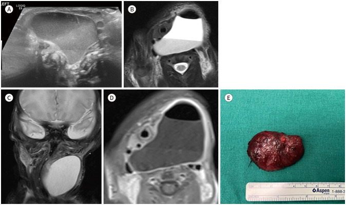
- Câu hỏi: Nang nằm ở khoang nào? Gợi ý nhánh cung mang nào? Cần tìm đường dò ở đâu?
Bấm để hiện đáp án
- Dấu hiệu (findings): (A–D) MRI cho thấy khối nang lớn vùng hố hầu/cổ thấp, mức dịch–dịch, đè đẩy tổ chức xung quanh; (E) tiêu bản đại thể khối nang.
- Chẩn đoán (diagnosis): dị tật túi mang IV (nhóm III/IV) — thường bên trái (~90%), dò vào xoang lỗ rò hình quả lê (pyriform sinus); cần nội soi ± chụp dò tìm đường dò và xử trí xoang pyriform để tránh tái phát. Lưu ý type IV hiếm khi bên phải (~6%).
- Nguồn ảnh: Park JE, J Korean Soc Radiol 2026 (PMC13266095), CC BY-NC 4.0 — Fig 5.
Ca 6 — Trẻ lệch mặt có cứng cổ nhẹ và đường cong bất thường. Nhìn ảnh trước.
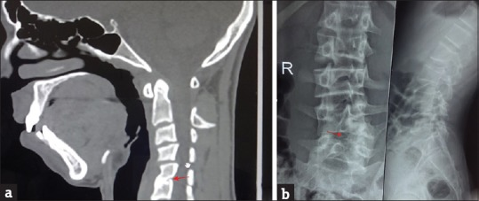
- Câu hỏi: Mô tả hai bất thường cột sống. Chúng thuộc nhóm dị tật bẩm sinh nào? Vì sao phải tìm ở mọi ca OAVS?
Bấm để hiện đáp án
- Dấu hiệu (findings): (a) CT cổ: đốt sống khối (block vertebra) C5–C6 — thân đốt sống dính liền, mất đĩa đệm; (b) X-quang ngực–thắt lưng: nửa đốt sống (hemivertebra) ở L5 kèm vẹo thắt lưng.
- Chẩn đoán (diagnosis): bất thường đốt sống bẩm sinh trong phổ OAVS (gặp ~50%) — vì đốt sống và cung hầu cùng bắt nguồn từ trung bì/mào thần kinh, và bất thường đốt sống là một trong ba trụ của tam chứng Goldenhar. Loại trừ vẹo vô căn bằng cách đếm đốt sống và tìm dị tật khối/nửa đốt sống.
- Nguồn ảnh: Chandrakala C et al. (PMC5363152), Indian J Dermatol 2017, CC BY-NC-SA 3.0 (giữ nguyên bản) — Fig 3.
Bài liên quan chéo
- 600 – Tổng quan Nhi khoa
- 657 – Dị tật hố sau: Joubert & rhombencephalosynapsis (bất thường mắt–cột sống kèm hố sau)
- 656 – Bất thường tủy–cột sống nhi (đốt sống, tủy căng)
- 655 – HIE sơ sinh & dị tật bẩm sinh TKTW
- 230 – Tuyến giáp ACR TI-RADS & hạch cổ (khối vùng cổ)
- 449 – Chấn thương mắt & dị vật nội nhãn (nhãn cầu)
- 420 – Vỡ sàn hốc mắt (hốc mắt)
Ảnh
- Ảnh tải về + giấy phép từng file:
images/CREDITS.md. Giấy phép trong bài: CC BY 4.0 (Fu Y, Tripathi A, Solmaz E), CC BY-NC 4.0 (Park JE), CC BY-NC-SA 3.0 (Chandrakala C), CC BY-NC-ND 4.0 (Al Hamoud M, Houas J). - Ảnh CC BY-NC-ND (Al Hamoud, Houas) giữ nguyên bản, không ghép/crop. Ảnh ghép đối chiếu tạo bằng
tools/make_composite.py(letterbox nền đen, giữ aspect) chỉ từ ảnh cho phép phái sinh.
Không dùng để chẩn đoán độc lập khi chưa có người hướng dẫn.